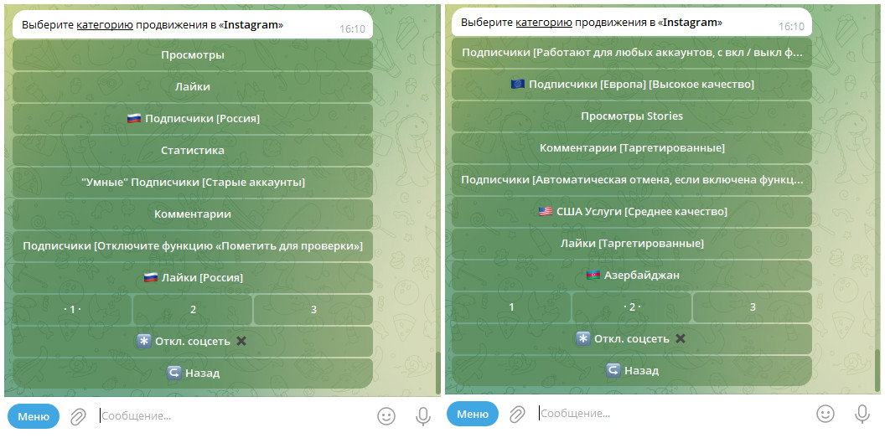
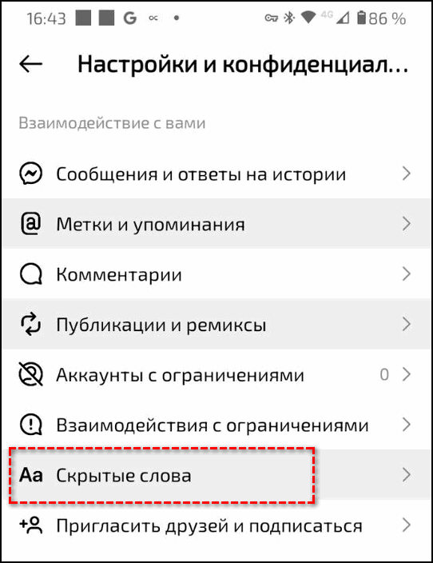
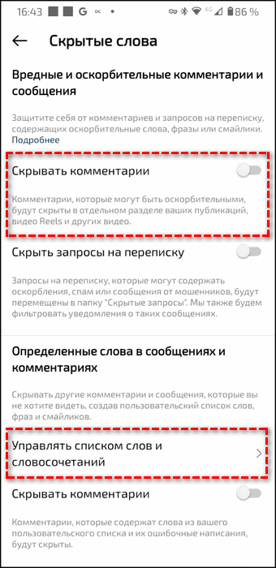

Накрутка комментариев в Инстаграме: ТОП-25 способа

- На что влияют комментарии в Инстаграме*
- ТОП 20 сервисов накрутки комментариев в Инстаграм*
- Лучший ТОП 1 - @V_TOP_soc_bot
- №1 Smmplace.ru
- №2 SMM-bloger.ru
- №3 @Smm_bloger_bot
- №4 @otec_smm_bot
- №5 SMOService
- №6 PRSkill
- №7 SMMPRime
- №8 TMSmm
- №9 SMMRoot
- №10 TaskPay
- №11 Qcomment
- №12 Forumok
- №13 LikeMania
- №14 Bigsmm
- №15 Piar4you
- №16 EasyLiker
- №17 MRPopular
- №18 MartiniSMM
- №19 SMMTouch
- №20 SMYYT
- ТОП 5 бесплатных способов
- Отзывы исчезают: что это значит
- Установить фильтр от ботов в Инстаграме*
Накрутка комментариев в Инстаграме* – это метод повышения активности, который необходим владельцам блогов, сообществ.
На что влияют комментарии в Инстаграме*
Комментарии — это один из показателей активности, который демонстрирует заинтересованность аудитории в контенте. Чем больше откликов под записью, тем больше вероятность что пост попадет в Рекомендации. Но есть условия при которых это правило работает:
- «живые» отзывы. Не однотипный текс или смайлики, а отклики в которых зрители задают вопросы, спорят и общаются в «ветке»;
- разное время добавления. При накрутке заметно, что отзывы появились в одно и то же время;
- комментарии оставляют не только подписчики (накрутить подписчиков можно разными способами), но и пользователи, которые пришли в аккаунт из других мест.
Чтобы запись стала популярна, автор может воспользоваться такими вариантами:
- намеренно допустить ошибку в тексте, названии;
- фото и видео, которые не совсем подходят под название записи;
- любые спорные темы, кроме политики;
- обратная связь от автора помогает в продвижении поста и получении комментариев.
Бывает в Инстаграме* становятся популярны записи, которые были размещены более двух-трех месяцев назад. Социальная сеть увеличивает постам охваты, чтобы получить больше взаимодействий.
ТОП 20 сервисов накрутки комментариев в Инстаграм*
Чтобы быстро получить активность в профиле, автор может воспользоваться накруткой. Это услуга привлечения потенциальной аудитории к своему аккаунту, с целью быстро оказаться в ТОПе или получить подписчиков.
Лучший ТОП 1 - @V_TOP_soc_bot

Самый лучший ТГ бот по накрутке Инстаграм* - широчайший спектр услуг по самым низким ценам. Переходите в сервис и проверяйте лично.№1 Smmplace.ru
В сервисе (рейтинге) от 7 разных тарифов, которые отличаются объемом, типом (позитивные, негативные, рандом). Разделенные по настроению – 2,90 за штуку, количество: от 75 символов – 93.00₽, от 150 – 105, от 300 – 118, от 500 – 168. В зависимости от объема, можно заказать ограниченное количество откликов: чем больше количество знаков – тем меньше комментариев можно получить. Но это отзывы от реальных пользователей, которые продвинут публикацию или видео в ТОП.
№2 SMM-bloger.ru
Предлагает два способа накрутки: с помощью быстрого заказа или после регистрации. Во втором случае можно заработать рубли и не вкладываться в продвижение дополнительно. С помощью варианта «Быстрый заказ» клиент сможет оформить комментарии по цене 0.7₽ за одну штуку. В сочетании с комментариями часто заказывают накрутку просмотров в Инстаграм*.
№3 @Smm_bloger_bot
Также есть два варианта: с оформлением через быстрый заказ и с помощью авторизации. В первом варианте можно заказ до 300 разных откликов с уникальных IP по цене 0.67₽. Есть возможность накрутки лайков в паре с комментариями.
№4 @otec_smm_bot
В сервисе можно создать задание для выполнения живыми людьми. Цена за выполнение начинается от 6 рублей ( + 1 рубль, если в качестве подтверждения нужен скриншот) и до 19 рублей за отклики размером более 19 рублей. Unu.im предлагает категории: отзывы от 150 символов, от 300 и от 500.
№5 SMOService
Есть два типа заказов: быстрый и стандартный после регистрации. Также разделены по подкатегориям:- положительные русские – 2,38 рубля за штуку;
- англоязычные (1,85₽) и положительные (2,12);
- на трансляцию - 1,42;
- о товаре – 2,28.
№6 PRSkill
Предлагает также два тип услуг: со своим текстом и со стандартным. Но эти категории разделены на дополнительные: офферы, положительные или нейтральные из СНГ, иностранные, Premium. За обычные отклики нужно заплатить 6 рублей за 5 штук, за высокое качество – 6,48₽. Разница в скорости выполнения, наличие у пользователя личных фото и написании комментария по теме публикации.№7 SMMPRime
Доступно три пакета, разделенных по половой принадлежности, наличию своего текста или случайного. Цена за отклики примерно одинаковая: от 3 рублей до 3,5 за одну штуку. Сервис гарантирует реальные отзывы, дает подтверждение на выполнение задачи и то, что отклики не будут удалены.№8 TMSmm
Три пакета услуг, которые отличаются географическими данными и качеством. За комментарии из СНГ стандартного качества заказчик заплатит 0,69 рублей, за отклики из России с повышенным качеством – 3,19, а за западные – 0,89.№9 SMMRoot
За позитивные и нейтральные комментарии из СНГ – 1,76₽, за любые случайные – 1,6₽. Пользователю необязательна регистрация, потому что заказ можно оформить по системе «Быстрого старта». Достаточно оставить свой адрес электронной почты, способ оплаты и указать необходимое количество.№10 TaskPay
В бирже заданий TaskPay можно сделать задачу и указать свою сумму за одно действие. Рекомендуемая цена – не ниже 1 рубля за комментарий. Также можно указать какой способ подтверждения выполнения подходит для заказчика: скриншот, никнейм автора отклика. Количество исполнителей – неограниченно.№11 Qcomment
Еще одна биржа контента, которая не ограничивает заказчика в выборе цены и количества исполнителей. В дополнительных условиях нужно написать способ проверки. Недостаток бирж в том, что заказчику нужно самостоятельно проверять каждую выполненную задачу.№12 Forumok
Старейшая биржа по выполнению заданий. Заказчик может оформить задачу, требуя высокое качество и установить усредненную оплату в 3 рубля за отклик. Или же указать оплату меньше, получить менее качественные отзывы, но в большем объеме. Задачи также нужно проверять вручную.№13 LikeMania
Два типа услуги: «Ваши комментарии» и «Случайные». В первом случае заказчику нужно ввести текст в соответствующее поле, расположенное под графой с количеством. Во втором – комментарии будут добавлены пользователями самостоятельно: от смайликов до короткого текста. За 10 отзывов со своим текстом – 10 рублей, за случайные – 8,90 руб.№14 Bigsmm
За 1000 комментариев от реальных пользователей заказчик отдаст 259 рублей. Максимальное количество за сутки – 3000. Сервис гарантирует выполнение, а также то, что отклики не будут удалены в течение 30 дней после публикации.№15 Piar4you
За 10 комментариев предложена оплата в 25,99 рублей. Задание будут выполнять боты, поэтому качество откликов может быть низким. Чтобы оформить заказ нужно авторизоваться или создать учетную запись в сервисе.№16 EasyLiker
Предлагает два типа откликов: настраиваемые и случайные. За первые, цена за 20 комментариев – 30 рублей. Это минимальный заказ, который можно оформить в сервисе. Настраиваемые с премиум качеством (быстрое выполнение, соответствие теме поста и гарантия) – 4 рубля за один комментарий.№17 MRPopular
Четыре тарифа, где первый «Отправить смайл» оценивается в 1 рубль, остальные «Настраиваемые», «Случайные» и «Тематические» - в 3 рубля за штуку. В сервисе нужно зарегистрироваться, чтобы получить доступ к созданию заданий.№18 MartiniSMM
Три пакета услуг, отличающиеся типом: «Смайлы», «Случайные» и «Тематические». За отправку реакций нужно заплатить 0,78 за один, случайные – 0,93, а тематические – 0,94. Сервис гарантирует высокое качество и скорость выполнения задачи.
№19 SMMTouch
Сервис предлагает три разных пакета, разделенных по количеству: 50, 100 и 1000 по 30, 60 и 600 рублей. Максимальное количество откликов, которые можно заказать – 3000. Есть гарантия от списаний и накрутка без бана.
№20 SMYYT
В сервисе есть два варианта накрутки комментариев: со своим текстом и стандартные от ботов. Разделены по тарифам: от эконома до ультима. Также есть отдельные по странам: Россия, СНГ, США, где есть от ботов и реальных пользователей. Обычные комментарии:
| Тариф: | Минимальное количество (шт): | Цена ₽: |
| Старт | 50 | 115 |
| Стандарт | 30 | 111,30 |
| Премиум | 35 | 194,95 |
| Премиум+ | 30 | 250,80 |
| Элит | 4 | 879,88 |
| Ультима | 13 | 724, 62 |
| Россия | 35 | 389,90 |
| Россия+ | 30 | 417,80 |
| Украина | 35 | 389,55 |
| Украина+ | 30 | 417,60 |
| Беларусь | 35 | 389,55 |
| Белураусь+ | 30 | 417,60 |
| Казахстан | 35 | 389,55 |
| Казахстан+ | 30 | 417,60 |
| США | 35 | 389,65 |
| США+ | 30 | 417,65 |
Услуга «Свои комментарии» отличается стоимостью за тариф «Элит» - 1319,99 ₽ за 4 реальных отклика.
ТОП 5 бесплатных способов
Помимо вариантов с оплатой, есть накрутка комментариев в Инстаграм* бесплатно. Владелец блога может самостоятельно продвигать контент и получать отклики, если будет следовать правилам:
- Использовать разные виды контента. Reels, Истории и «карусель» для фотографий.
- Создавать текстовые публикации. Популярный формат – скриншот из приложения «Заметки», где автор поста подробно рассказывает какую-либо историю или дает совет.
- Вопросы в публикации. Основной текст, в конце которого будет вопрос для читателей.
- Необычные названия и «Продолжение в описании». Если нужно получить лайки для короткого клипа.
- Привлекать друзей и знакомых, чтобы получить отзывы. Чем больше откликов от других пользователей, тем выше вероятность что публикация попадет в ТОП.
Каждый из этих способов можно применять в своем блоге, чтобы получать больше взаимодействий с контентом.
Отзывы исчезают: что это значит
Случается, что комментарии пропадают, хотя в разделе видно, что количество не изменилось. Это происходит по нескольким причинам:
- нужно обновить приложение. Устаревшая версия приложения не отображает всех откликов;
- нужно переустановить Инстаграм*. Попробовать решить проблему таким способом;
- зайти с компьютерной версии, где показан весь список отзывов;
- в комментарии содержалась нецензурная лексика, оскорбления.
Установить фильтр от ботов в Инстаграме*
Если владелец страницы часто получает отклики от ботов, спамеров, то он может выставить фильтр по определенным словам или категориям. Автор комментария увидит, что его текст отправлен, но тот сразу будет удален. Владелец аккаунта даже не узнает, что под его записями был оставлен такой ответ. Как установить фильтр:
- Зайти в Инстаграм* - перейти в раздел: «Настройки».
- Конфиденциальность – Скрытые слова.

- Расширенные скрытые слова, фильтр на оскорбительные комментарии – включить все.

- Выйти из настроек.
Теперь владелец страницы не только не увидит подобные отклики под своими постами, но они будут скрыты и на чужих. То есть, в списке комментариев могут отсутствовать некоторые тексты.